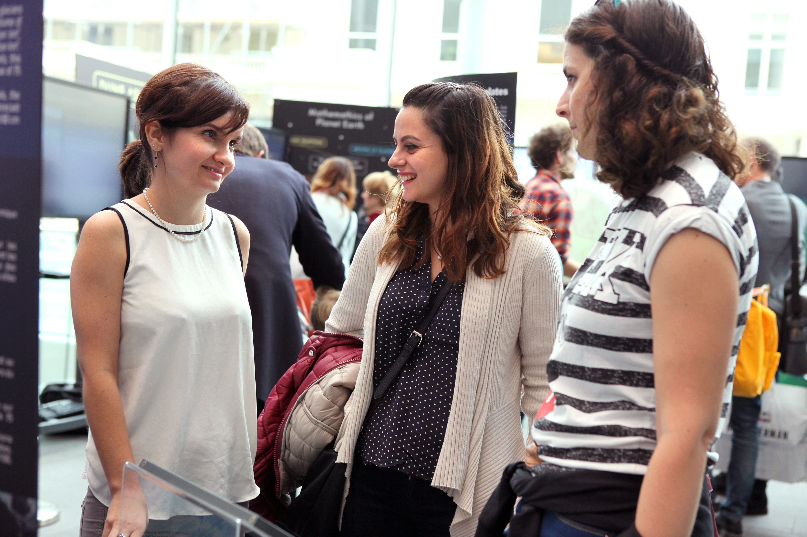
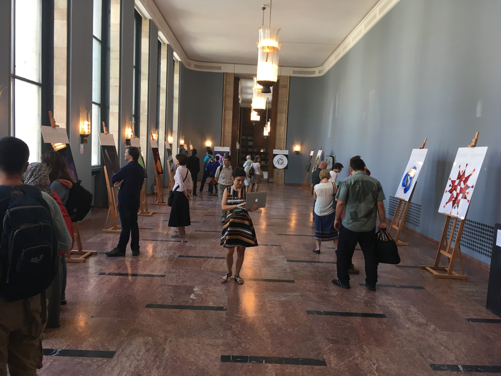
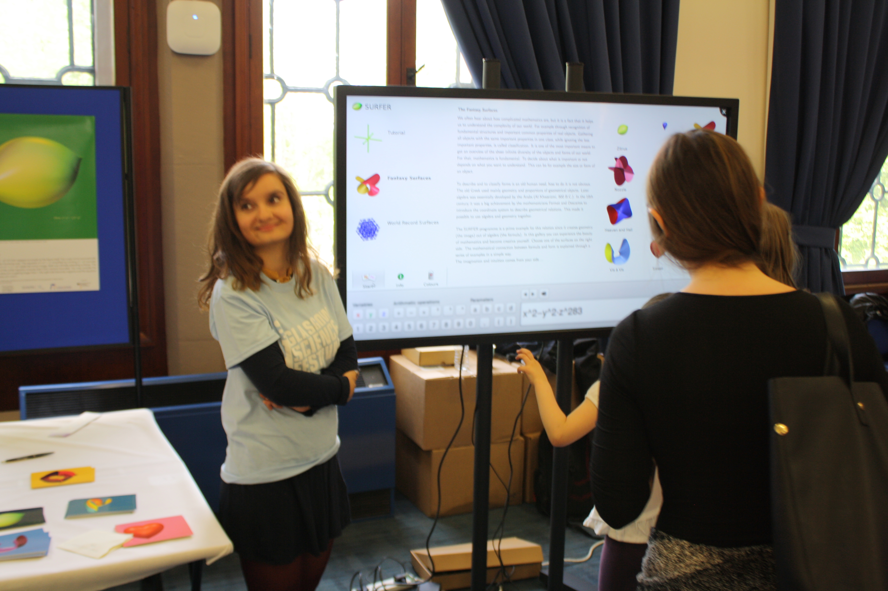

IMAGINARY - Mathematics Communication
IMAGINARY is an open source platform for mathematics resources. It is a non profit organisation that started as the maths outreach project of the Mathematische Forschungsinstitut Oberwolfach (MFO). Currently, it hosts two mathematics related exhibitions (“IMAGINARY - through the eyes of mathematics” and “Math of Planet Earth”), but also interactive programs, films etc. that can be used in maths classes at school or at home. Initially, I got involved with IMAGINARY in connection with the Mathematics of Planet Earth Year 2013, where Guillaume Jouvet, Chantal Landry and I entered a competition to prepare a module relating mathematics and planet earth to be displayed at a museum. The module we entered, was awarded the third prize and is being shown internationally at various different museums and events, for example the MiMa museum Oberwolfach, the Technische Museum in Berlin and the ICM in Seoul. Our entry was a film based on Guillaume's research about the evolution of glaciers.


Two Left Feat - A Physical Theatre Group

Two left Feat is a Scottish based performance group that aims to combine the visual spectacle and adrenaline fuelled stunts of acrobatics with the entertainment and delight of physical theatre. It evolved from an idea over a pint in a pub to an actual group run by five acrobatics enthusiasts, me being one of them. For more information about the group and some pictures from past events where Two left feat performed checkout the facebook page.